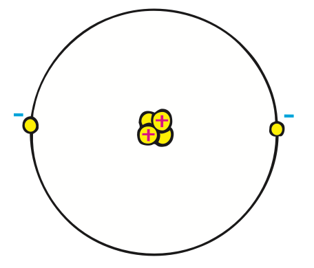

Electric Charges
The terms positive and negative refer to electric charge, the fundamental quantity that underlies all electrical phenomena. The positively charged particles in ordinary matter are protons, and the negatively charged particles are electrons. The proton is stuck in the nucleus of an atom and is not as mobile as the tinier electron that can dash around and do all sorts of useful things. Accompanying protons in the nucleus are neutral particles called neutrons. When two atoms get close together, the balance of attractive and repelling forces is not perfect because electrons whiz around within the volume of each atom. The atoms may then attract one another and form a molecule. In fact, all the chemical bonding forces that hold atoms together to form molecules are electrical in nature. Anyone who is planning to study chemistry should first know something about electrical attraction and repulsion and, before studying electrical phenomena, should know something about atoms. Recall from Chapter 11 some important facts about atoms:
- Every atom is composed of a positively charged nucleus surrounded by negatively charged electrons.
- The electrons of all atoms are identical. Each has the same quantity of negative charge and the same mass.
- Protons and neutrons make up the nucleus. (The common form of the hydrogen atom, which has no neutron, is the only exception.) Protons are about 1800 times more massive than electrons, but they carry an amount of positive charge equal to the negative charge of electrons. Neutrons have slightly more mass than protons and have no net charge.
- Atoms usually have as many electrons as protons, so the atom has zero net charge.
Why don’t protons pull the oppositely charged electrons into the nucleus? You might think that electrons behave the same way as planets that orbit the Sun. But not so; this planetary explanation is invalid for electrons. When the nucleus was discovered in 1911, scientists knew that electrons couldn’t orbit placidly around the nucleus in the way Earth orbits the Sun. In only about a hundred-millionth of a second, according to classical physics, the electron would spiral into the nucleus, emitting electromagnetic radiation as it did so. So a new theory was needed, the theory called quantum mechanics. In describing electron motion, we still use old terminology, orbit and orbital, although the preferred word is shell, which suggests that the electrons are spread out over a spherical region. Today, the explanation for the atom’s stability has to do with the wave nature of electrons. An electron behaves like a wave and requires a certain amount of space related to its wavelength. When we treat quantum mechanics in Chapter 32, we’ll see that atomic size is determined by the minimum amount of “elbow room” that an electron requires.

Why don’t the protons in the nucleus mutually repel and fly apart? What holds the nucleus together? The answer is that, in addition to electrical forces in the nucleus, even stronger nonelectrical nuclear forces hold the protons together and overcome the electrical repulsion. In Chapter 33 we will learn about nuclear forces and how neutrons put a needed distance between the protons.